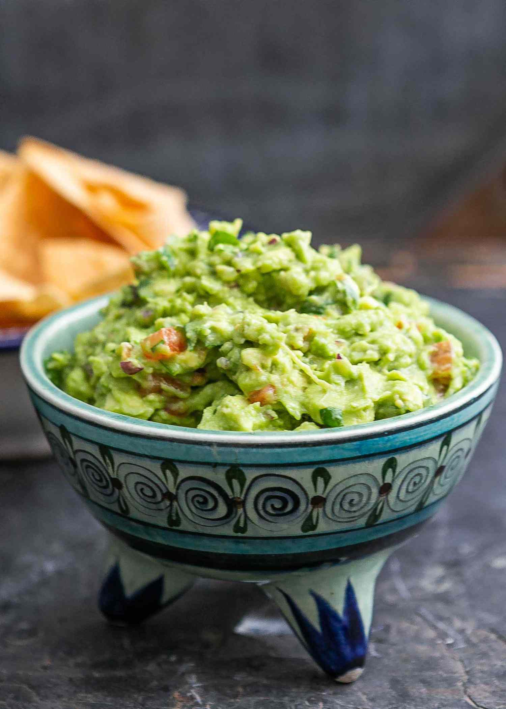

Easy Homemade Guacamole

Recipe for Easy Homemade Guacamole
This recipe is a tasty dip for your tortilla chips. It is restaurant worthy but packs a tasty
kick because of the ingredients. You can serve it 2 ways: chunky or smooth.
The step-by-step guide to making this recipe can be found below.
Homemade Guacamole Ingredients
- Avocadoes
- Lime
- Salt
- Onion
- Roma tomatoes
- Fresh cilantro
- Minced garlic
- Cayenne pepper
Step-by-Step Guide to your Easy Homemade Guacamole
-
Mash avocadoes, lime juice, and salt together in a medium bowl, mix in
tomaties, onion, cilantro, and garlic. Stir in cayenne pepper.
-
Serve immediately, or cover and refrigerate for 1 hour to improved flavor.
Return to Homepage